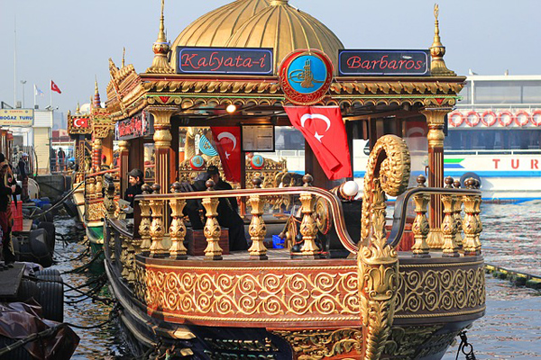
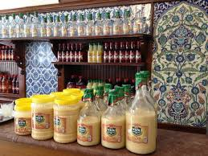
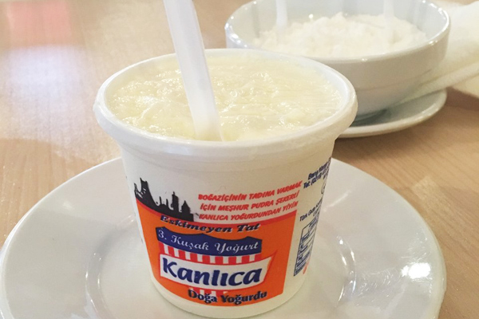
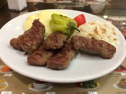
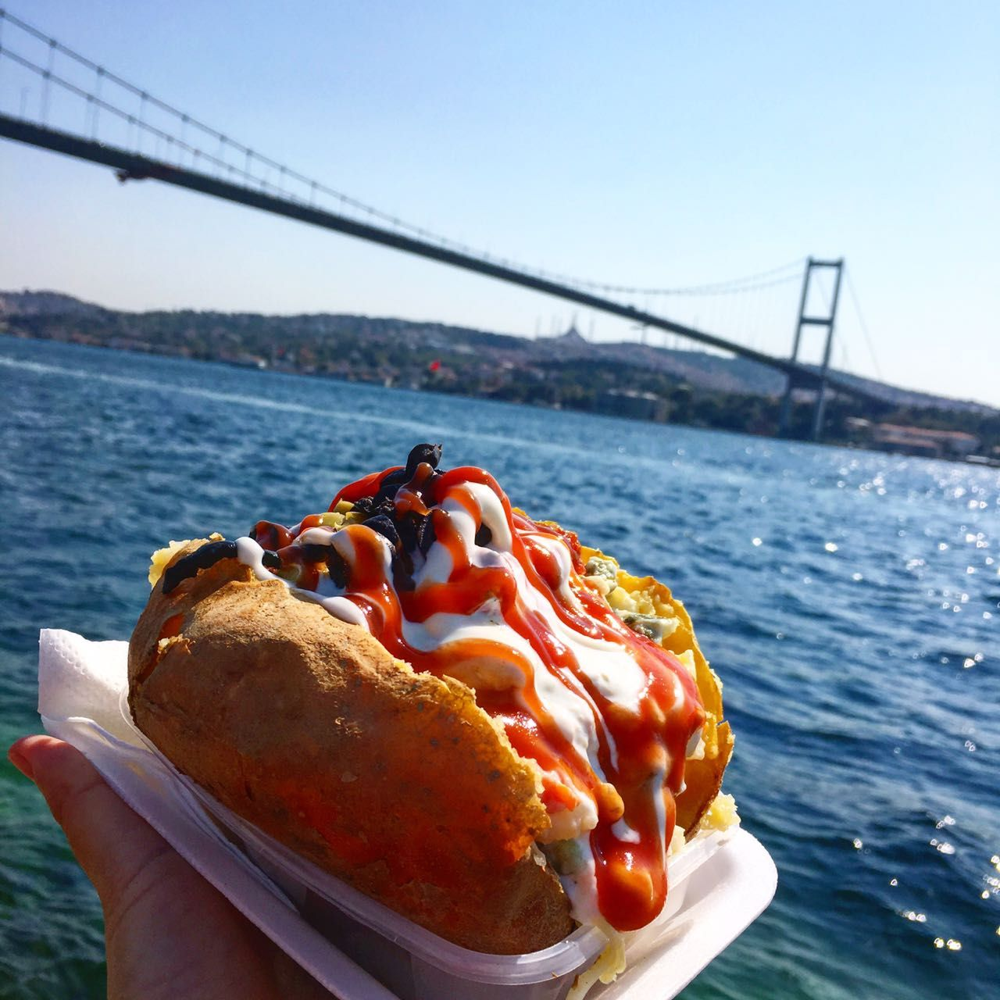
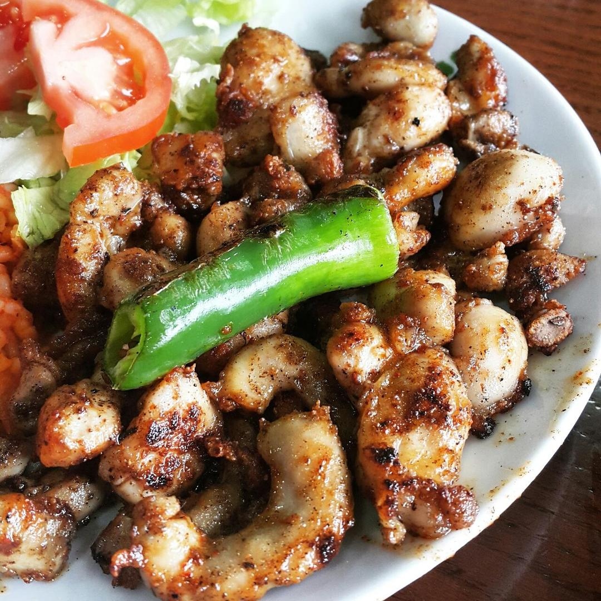
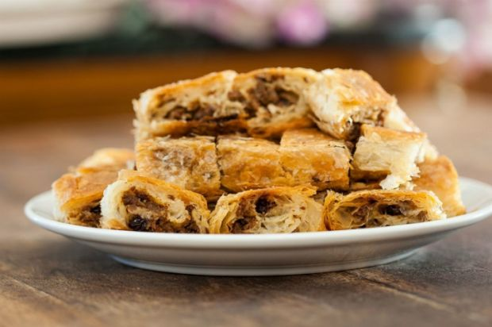
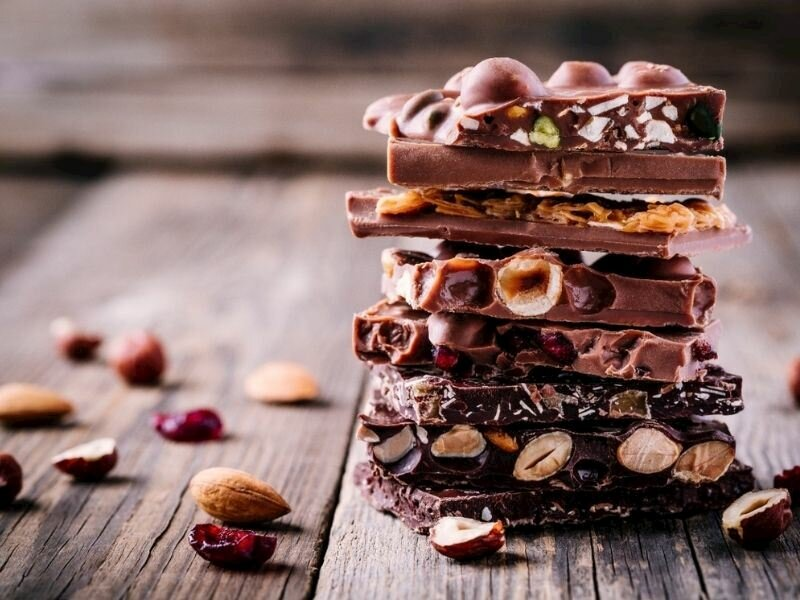
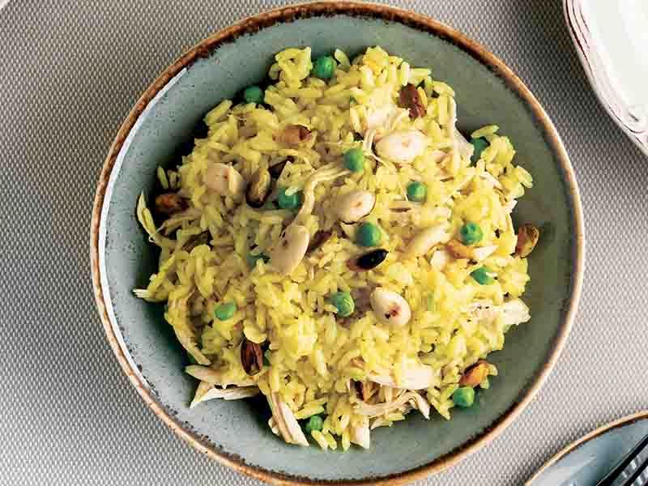

(Eminönü-Balık) |
BOĞAZ-BALIKİstanbul Boğazı manzaralı bir akşam yemeğine kim hayır diyebilir ki? Boğazın ışıltısı altında kendinizi ve sevdiklerinizi mutlu etmek için İstanbul Boğazı civarındaki herhangi bir restorana gidebilirsiniz. Çünkü bu bölge, yıllardır nezih ve kaliteli restoranları ile ilgi görmekte. İstanbul Boğazı’na karşı yenilecek lezzetli yemeklerden biri de balık oluyor. Tabi bu balık daha çok uzun uzun sohbetlerin eşlik ettiği davet masalarında lezzetleniyor. Bu nedenle İstanbul Boğazı, yıllardır balık ziyafetlerinin verildiği mekanlar ile meşhurdur.Sizlerde bu müthiş lezzeti evde denemek isterseniz tarifi aşağıda ki linklen ayrıntıları ile bulabilirsiniz. |

(Laleli/Vefa) |
VEFA-BOZAstanbul’da boza denildiği anda akıllara gelen semttir Vefa. Kış aylarında bağışıklık sisteminizi güçlendirmek için Vefa semtine boza içmek için uğrayabilirsiniz. 1876 senesinden günümüze kadar boza yapımına devam edilen Vefa semti, en eski Türk sıcak içeceğinin korunmasına da destek olmaktadır. Boza kültürünün devam etmesi ve geniş bir coğrafyaya yayılması Vefa semtinin asırlardır canlı kalması sayesindedir.Sizlerde bu müthiş lezzeti evde denemek isterseniz tarifi aşağıda ki linklen ayrıntıları ile bulabilirsiniz. |

(Kanlıca) |
KANLICA-YOĞURTKanlıca, Osmanlı zamanında hava en temiz seçilen semtlerden biridir. İsim hikayesi de buradan gelir. Osmanlı sultanlarından biri, İstanbul’un en temiz havasına sahip olan semtin seçilmesini istemiştir. Bu semtin tespit edilmesi için her bir semte kanlı şekilde et asılan direklerin dikilmesi uygun görülmüştür. Etlerden hangisi daha geç bozuluyorsa, o semt temiz havası ile ilan edilecektir. Sultanın emri ile Kanlıca seçilir ve o günden sonra bu semte Kanlıca adı verilir. Kanlıca’nın en meşhur lezzeti de yoğurttur. Bu yoğurt ise pudra şekeri ile beraber tüketildiğinde damaklarda unutulmaz bir tat bırakır. Sizlerde bu müthiş lezzeti evde denemek isterseniz tarifi aşağıda ki linklen ayrıntıları ile bulabilirsiniz. |

(Sultanahmet-Köfte) |
SULTANAHMET-KÖFTETarihi yapısıyla ilgi gören Sultanahmet, meşhur köftecileriyle de gelenlerin iştahını açar. Sultanahmet’teki köftecilerin en eskisi 1920 yılında hizmete açılan Tarihi Sultanahmet Halk Köftecisi Selim Usta’dır. Karnı acıkan, meşhur lezzet tatmak isteyen, İstanbul’un lezzetlerini sırasıyla denemek isteyenlere yeni önerimiz: Sultanahmet köftecileri! Sizlerde bu müthiş lezzeti evde denemek isterseniz tarifi aşağıda ki linklen ayrıntıları ile bulabilirsiniz. |

(Kumpir-Ortaköy) |
ORTAKÖY-KUMPİRAvrupa Yakası’nın Beşiktaş semtinde bulunan Ortaköy Cami, bu bölgeye adını da vermiştir. Ortaköy’ün en sevilen ve meşhur lezzeti kumpirdir. Ortaköy’e giden her kişinin muhakkak meşhur kumpirlerden yemesini tavsiye ederiz. Çünkü bu civardaki kumpirler yabancı turistler tarafından da çok beğenilmiştir. Patatesin en lezzetli halini denemeniz için Ortaköy’e gidiş planları yapabilirsiniz. Sizlerde bu müthiş lezzeti evde denemek isterseniz tarifi aşağıda ki linklen ayrıntıları ile bulabilirsiniz. |
ALTERNATİF LEZZETLER

(UYKULUK) |

(SARIYER BÖREĞİ) |

(BEYOĞLU ÇİKOLTASI) |

(İSTANBUL PİLAVI) |